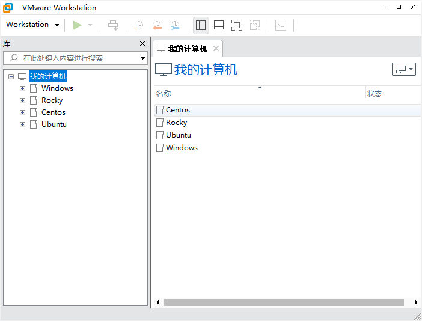
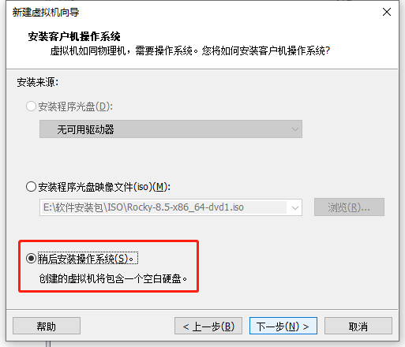
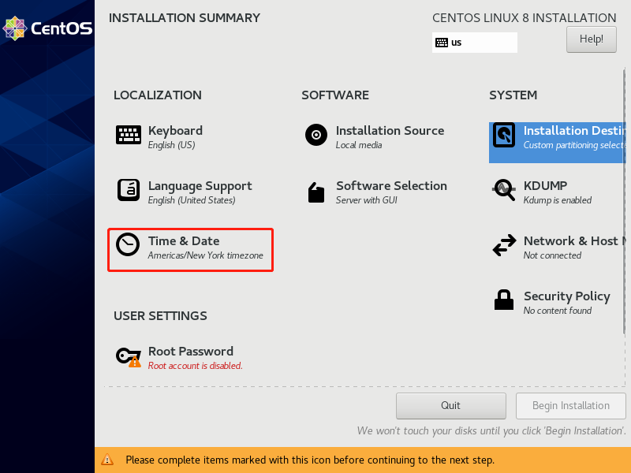
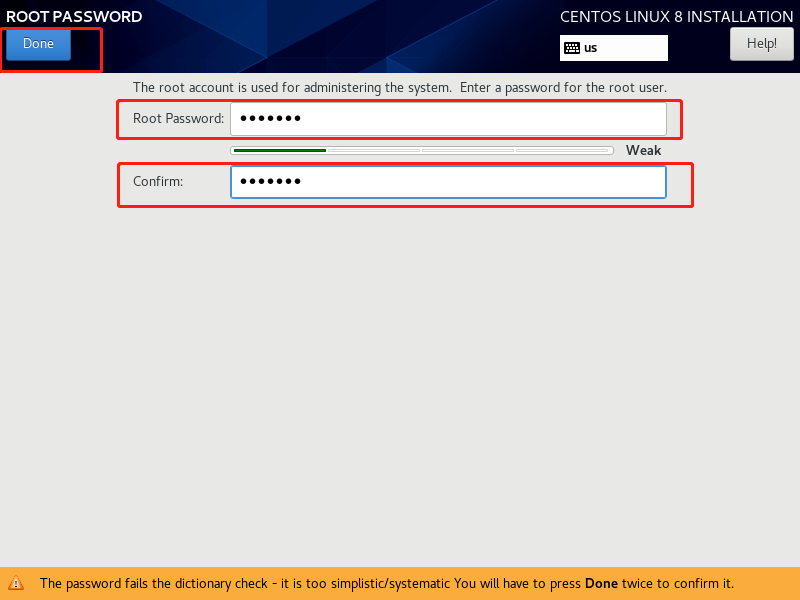

第一周作业
[TOC]
图文并茂解释开源许可证 GPL、BSD、MIT、Mozilla、Apache和LGPL的区别？

GPL协议
- GPL协议和BSD, Apache Licence等鼓励代码重用的许可很不一样。GPL的出发点是代码的开源/免费使用和引用/修改/衍生代码的开源/免费使用，但不允许修改后和衍生的代码做为闭源的商业软件发布和销售。包括商业公司的linux和linux上各种各样的由个人，组织，以及商业软件公司开发的免费软件了。
- GPL协议的主要内容是只要在一个软件中使用(”使用”指类库引用，修改后的代码或者衍生代码)GPL 协议的产品，则该软件产品必须也采用GPL协议，既必须也是开源和免费。这就是所谓的”传染性”。GPL协议的产品作为一个单独的产品使用没有任何问题，还可以享受免费的优势。
- 由于GPL严格要求使用了GPL类库的软件产品必须使用GPL协议，对于使用GPL协议的开源代码，商业软件或者对代码有保密要求的部门就不适合集成/采用作为类库和二次开发的基础。
BSD协议
- BSD开源协议是一个给于使用者很大自由的协议。基本上使用者可以”为所欲为”,可以自由的使用，修改源代码，也可以将修改后的代码作为开源或者专有软件再发布。但”为所欲为”的前提当你发布使用了BSD协议的代码，或则以BSD协议代码为基础做二次开发自己的产品时，需要满足三个条件：
- 如果再发布的产品中包含源代码，则在源代码中必须带有原来代码中的BSD协议。
- 如果再发布的只是二进制类库/软件，则需要在类库/软件的文档和版权声明中包含原来代码中的BSD协议。
- 不可以用开源代码的作者/机构名字和原来产品的名字做市场推广。
- BSD 代码鼓励代码共享，但需要尊重代码作者的著作权。BSD由于允许使用者修改和重新发布代码，也允许使用或在BSD代码上开发商业软件发布和销售，因此是对商业集成很友好的协议。而很多的公司企业在选用开源产品的时候都首选BSD协议，因为可以完全控制这些第三方的代码，在必要的时候可以修改或者二次开发。
MIT协议
- MIT是和BSD一样宽范的许可协议,作者只想保留版权,而无任何其他了限制.也就是说,你必须在你的发行版里包含原许可协议的声明,无论你是以二进制发布的还是以源代码发布的.
Mozilla协议
- 简称MPL协议。1998年初Netscape的 Mozilla小组为其开源软件项目设计的软件许可证。MPL许可证出现的最重要原因就是，Netscape公司认为GPL许可证没有很好地平衡开发者对源代码的需求和他们利用源代码获得的利益。同著名的GPL许可证和BSD许可证相比，MPL在许多权利与义务的约定方面与它们相同（因为都是符合OSIA 认定的开源软件许可证）。但是，相比而言MPL还有以下几个显著的不同之处:
- MPL虽然要求对于经MPL许可证发布的源代码的修改也要以MPL许可证的方式再许可出来，以保证其他人可以在MPL的条款下共享源代码。但是，在MPL 许可证中对“发布”的定义是“以源代码方式发布的文件”，这就意味着MPL允许一个企业在自己已有的源代码库上加一个接口，除了接口程序的源代码以MPL 许可证的形式对外许可外，源代码库中的源代码就可以不用MPL许可证的方式强制对外许可。这些，就为借鉴别人的源代码用做自己商业软件开发的行为留了一个豁口。
- MPL许可证第三条第7款中允许被许可人将经过MPL许可证获得的源代码同自己其他类型的代码混合得到自己的软件程序。
- 对软件专利的态度，MPL许可证不像GPL许可证那样明确表示反对软件专利，但是却明确要求源代码的提供者不能提供已经受专利保护的源代码（除非他本人是专利权人，并书面向公众免费许可这些源代码），也不能在将这些源代码以开放源代码许可证形式许可后再去申请与这些源代码有关的专利。
- 对源代码的定义：而在MPL（1.1版本）许可证中，对源代码的定义是:“源代码指的是对作品进行修改最优先择取的形式，它包括:所有模块的所有源程序，加上有关的接口的定义，加上控制可执行作品的安装和编译的‘原本’（原文为‘Script’），或者不是与初始源代码显著不同的源代码就是被源代码贡献者选择的从公共领域可以得到的程序代码。”
- MPL许可证第3条有专门的一款是关于对源代码修改进行描述的规定，就是要求所有再发布者都得有一个专门的文件就对源代码程序修改的时间和修改的方式有描述。
Apache协议
- Apache Licence是著名的非盈利开源组织Apache采用的协议。该协议和BSD类似，同样鼓励代码共享和尊重原作者的著作权，同样允许代码修改，再发布（作为开源或商业软件）。需要满足的条件也和BSD类似：
- 需要给代码的用户一份Apache Licence
- 如果你修改了代码，需要再被修改的文件中说明。
- 在延伸的代码中（修改和有源代码衍生的代码中）需要带有原来代码中的协议，商标，专利声明和其他原来作者规定需要包含的说明。
- 如果再发布的产品中包含一个Notice文件，则在Notice文件中需要带有Apache Licence。你可以在Notice中增加自己的许可，但不可以表现为对Apache Licence构成更改。
- Apache Licence也是对商业应用友好的许可。使用者也可以在需要的时候修改代码来满足需要并作为开源或商业产品发布/销售。
LGPL协议
- LGPL是GPL的一个为主要为类库使用设计的开源协议。和GPL要求任何使用/修改/衍生之GPL类库的的软件必须采用GPL协议不同。LGPL 允许商业软件通过类库引用(link)方式使用LGPL类库而不需要开源商业软件的代码。这使得采用LGPL协议的开源代码可以被商业软件作为类库引用并发布和销售。
- 但是如果修改LGPL协议的代码或者衍生，则所有修改的代码，涉及修改部分的额外代码和衍生的代码都必须采用LGPL协议。因此LGPL协议的开源代码很适合作为第三方类库被商业软件引用，但不适合希望以LGPL协议代码为基础，通过修改和衍生的方式做二次开发的商业软件采用。
- GPL/LGPL都保障原作者的知识产权，避免有人利用开源代码复制并开发类似的产品
安装各发行版系统的安装(centos, rockylinux, ubuntu, 等)
安装前准备
系统镜像下载路径
Centos发行版本
1
2
3https://mirrors.aliyun.com/centos/ #阿里云源
http://mirrors.sohu.com/centos/ #豆瓣源
http://mirrors.163.com/centos/ #163源示例
1
https://mirrors.aliyun.com/centos/8/isos/x86_64/?spm=a2c6h.25603864.0.0.53d31ce4yWjPMMrockylinux发行版本
1
2https://mirrors.aliyun.com/rockylinux/ #阿里云源
http://mirrors.163.com/rocky/ #163源示例
1
https://mirrors.aliyun.com/rockylinux/8/isos/x86_64/?spm=a2c6h.25603864.0.0.2f0d2e074UDwNs
ubuntu发行版
1
2
3https://mirrors.aliyun.com/oldubuntu-releases/
http://mirrors.aliyun.com/ubuntu-releases/
http://cdimage.ubuntu.com/releases/示例
1
http://mirrors.aliyun.com/ubuntu-releases/16.04/?spm=a2c6h.25603864.0.0.75fb4ddaalA5Ck
VMware® Workstation 16 Pro
下载路径
1
https://www.vmware.com/products/workstation-pro/workstation-pro-evaluation.htmlvmware16pro许可证密钥最新（出至网络搜索来源）
1
2
3ZF3R0-FHED2-M80TY-8QYGC-NPKYF
YF390-0HF8P-M81RQ-2DXQE-M2UT6
ZF71R-DMX85-08DQY-8YMNC-PPHV8

系统安装
centos8最小化安装
新建虚拟机：ctrl + n








Ubuntu系统最小安装


linuxrocky系统最小化安装
请参考centos安装步骤
Linux中总结
如何通过一个简短的关键字，例如process 获取相关的命令。
通过type判断关键字是否为内部命令还是外部命令
1 | |
内置命令：help + 命令
用法：
1 | |
外部命令：命令 + -h/–help 或 man + 命令
用法：
1 | |
通过命令的描述，选择一个命令，获取命令的man文档。
man + 命令
用法
1
2
3
4
5
6
7
8
9
10
11
12
13
14
15
16
17
18
19
20
21
22
23
24
25
26
27
28
29
30[14:33:57 root@10 ~]#man ls
LS(1) User Commands LS(1)
NAME
ls - list directory contents
SYNOPSIS
ls [OPTION]... [FILE]...
DESCRIPTION
List information about the FILEs (the current directory by default). Sort entries alphabetically if none of -cftu‐
vSUX nor --sort is specified.
Mandatory arguments to long options are mandatory for short options too.
-a, --all
do not ignore entries starting with .
-A, --almost-all
do not list implied . and ..
--author
with -l, print the author of each file
-b, --escape
print C-style escapes for nongraphic characters
--block-size=SIZE
.................
解读man文档，man分几个部分？man每个部分的解释，特别是语法部分。<>, [] …等各代表什么含义。
man文档划分9部分
man文档各部分划分含义
1
2
3
4
5
6
7
8
91 可执行程序或 shell 命令
2 系统调用(内核提供的函数)
3 库调用(程序库中的函数)
4 特殊文件(通常位于 /dev)
5 文件格式和规范，如 /etc/passwd
6 游戏
7 杂项(包括宏包和规范，如 man(7)，groff(7))
8 系统管理命令(通常只针对 root 用户)
9 内核例程 [非标准]命令帮助时，会出现[],<>,|等符号，它们的含义
1
2
3
4[] 表示是可选的;
<> 表示是可变化的;
x|y|z 表示只能选择一个;
-abc 表示三个参数(或任何二个)的混合使用
根据语法部分 简要的写几个操作。
man常用的按键按鍵
1
2
3
4
5
6
7
8
9
10
11
12
13
14
15
16
17
18
19空格鍵 向下翻一页
[Enter] 向下翻一行
[Page Down] 向下翻一页，↓为向下一行
[Page Up] 向上翻一页，↑为向上一行
[Home] 到第一页
[End] 到最后一页
/string 向『下』搜寻关键字string
?string 向『上』搜寻关键字string
n, N 利用/或?进行搜索时，可以用n来查看下一个结果，用N来进行『反向』查看。
q 结束这次的man输出man用法
1
2
3
4
5
6
7
8
9
10
11
12
13
14
15
16
17
18
19
20
21
22
23
24
25
26
27
28
29
30
31
32
33
34
35
36
37
38[01:12:51 root@10 data]#whatis passwd
openssl-passwd (1ssl) - compute password hashes
passwd (1) - update user's authentication tokens
passwd (5) - password file
[01:12:57 root@10 data]#man passwd
PASSWD(1) User utilities PASSWD(1)
NAME
passwd - update user's authentication tokens
SYNOPSIS
passwd [-k] [-l] [-u [-f]] [-d] [-e] [-n mindays] [-x maxdays] [-w warndays] [-i inactivedays] [-S] [--stdin] [-?]
[--usage] [username]
[01:14:16 root@10 data]#man 5 passwd
PASSWD(5) Linux Programmer's Manual PASSWD(5)
NAME
passwd - password file
DESCRIPTION
The /etc/passwd file is a text file that describes user login accounts for the system. It should have read permis‐
sion allowed for all users (many utilities, like ls(1) use it to map user IDs to usernames), but write access only
for the superuser.
In the good old days there was no great problem with this general read permission. Everybody could read the
encrypted passwords, but the hardware was too slow to crack a well-chosen password, and moreover the basic assumption
used to be that of a friendly user-community. These days many people run some version of the shadow password suite,
where /etc/passwd has an 'x' character in the password field, and the encrypted passwords are in /etc/shadow, which
is readable by the superuser only.
If the encrypted password, whether in /etc/passwd or in /etc/shadow, is an empty string, login is allowed without
even asking for a password. Note that this functionality may be intentionally disabled in applications, or config‐
urable (for example using the "nullok" or "nonull" arguments to pam_unix.so).
If the encrypted password in /etc/passwd is "*NP*" (without the quotes), the shadow record should be obtained from an
NIS+ server.
切换到/etc/目录，列出fstab文件的详细信息，详细解释fstab一行，每个或每几个字符的详细含义。
切换到/etc/目录
1 | |
列出fstab文件的详细信息
1 | |
详细解释fstab一行，每个或每几个字符的详细含义
第一列表示设备的名称
- 设备uuid
- 设备文件全路径名
第二列表示该设备的挂载点
第三列是文件系统
常用文件系统：
- xfs
- ext(1-4)
- swap
第四列是挂载选项
default：包含rw, suid, dev, exec, auto, nouser,和 async
第五列是dump选项（用一个数字表示）
第六列（接下来的数字）表示文件系统检查选项
简要说明FHS结构。
文件系统层次结构标准（英语：Filesystem Hierarchy Standard，FHS**）定义了Linux操作系统中的主要目录及目录内容。FHS由Linux基金会维护。 当前版本为3.0版，于2015年发布。
/ 第一层次结构的根，整个文件系统层次结构的根目录 /bin 需要在单用户模式可用的必要命令（可执行文件）；面向所有用户，例如：cat、ls、cp /sbin 必要的系统二进制文件，面向管理员用户。例如：init、ip、mount /boot 引导程序文件，系统引导文件，如内核vmlinuz、ramfs文件，initrd，以及grub（bootloader）；通常划分单独的分区 /dev 必要设备, 例如：/dev/null，/dev/sda /etc 系统范围内的配置文件 /home 用户的家目录，包含保存的文件、个人设置等每一个用户的家目录通常默认为/home/$USER /lib /bin/ 和 /sbin/中二进制文件必要的库文件。 /lib64 /bin/ 和 /sbin/中二进制文件必要的库文件（64位）。 /lost+found 系统断电时候临时保存的，默认为空 /media 可移除媒体(如CD-ROM)的挂载点 /mnt 临时挂载的文件系统 /opt 备用目录，第三方程序的安装目录，默认为空 /proc 虚拟文件系统，将内核与进程状态归档为文本文件。例如：uptime、 network。在Linux中，对应Procfs格式挂载。/proc/meminfo：查看内存信息/proc/cpuinfo：cpu信息/proc/mounts：挂载信息/proc/loadavg：负载信息/proc/partitions：磁盘信息 /root 超级用户的家目录 /selinux selinux相关的安全策略等信息存储的位置，默认为空 /srv 为服务提供数据存放位置，默认为空 /sys 虚拟文件系统，用于输出当前系统上硬件设备相关信息的虚拟文件系统 /tmp 临时文件(参见 /var/tmp)，在系统重启时目录中文件不会被保留。 /usr 用于存储只读用户数据的第二层次； 包含绝大多数的(多)用户工具和应用程序。 /var 频繁发生变化的文件——在正常运行的系统中其内容不断变化的文件，如日志，脱机文件和临时电子邮件文件。/var/cache：应用程序缓存数据目录/var/lib：应用程序状态信息数据/var/local：专用于/usr/local下的应用程序存储可变数据/var/log：日志目录文件 /var/log/messages系统日志 /var/log/secure 安全日志 SSH连接日志/var/lock：锁文件/var/run：与运行中进程相关的数据；通常存放进程的PID文件/var/spool：应用程序数据池/var/tmp：保存系统两次重启之间产生的临时数据
用自己的理解总结 文件管理，用户管理，组用户，权限管理相关的命令。
文件管理
相关常用命令：cd 、tree、cp、mv、mkdir、rm、cat、head、tail，touch
cd：目录切换
选项：
1
2
3cd ~：用户家目录
cd -：切换会上一目录
cd /data：访问某一个目录用法：
1
2
3
4
5
6
7
8
9[01:35:31 root@10 data]#pwd
/data
[01:54:18 root@10 data]#cd ~
[01:54:21 root@10 ~]#pwd
/root
[01:54:23 root@10 ~]#cd -
/data
[01:54:29 root@10 data]#pwd
/data
tree：以树状格式列出目录的内容
选项
1
2
3
4
5
6
7
8
9
10
11
12
13
14
15
16
17
18
19
20-a 显示所有文件和目录。
-A 使用ASNI绘图字符显示树状图而非以ASCII字符组合。
-C 在文件和目录清单加上色彩，便于区分各种类型。
-d 显示目录名称而非内容。
-D 列出文件或目录的更改时间。
-f 在每个文件或目录之前，显示完整的相对路径名称。
-F 在执行文件，目录，Socket，符号连接，管道名称名称，各自加上"*","/","=","@","|"号。
-g 列出文件或目录的所属群组名称，没有对应的名称时，则显示群组识别码。
-i 不以阶梯状列出文件或目录名称。
-L level 限制目录显示层级。
-l 如遇到性质为符号连接的目录，直接列出该连接所指向的原始目录。
-n 不在文件和目录清单加上色彩。
-N 直接列出文件和目录名称，包括控制字符。
-p 列出权限标示。
-P<范本样式> 只显示符合范本样式的文件或目录名称。
-q 用"?"号取代控制字符，列出文件和目录名称。
-s 列出文件或目录大小。
-t 用文件和目录的更改时间排序。
-u 列出文件或目录的拥有者名称，没有对应的名称时，则显示用户识别码。
-x 将范围局限在现行的文件系统中，若指定目录下的某些子目录，其存放于另一个文件系统上，则将该子目录予以排除在寻找范围外。用法
1
2
3
4
5
6
7
8
9
10
11
12
13
14
15
16
17
18
19
20
21
22
23
24
25[15:24:51 root@10 data]#tree /root/study/
/root/study/
├── answer.sh
├── bashdir
│ ├── 1amyoo-v3.sh
│ ├── backup.sh
│ ├── bmi.sh
│ ├── chook_rabbit.sh
│ ├── color2.sh
│ ├── color.sh
│ ├── disk_check.sh
│ ├── hello.sh
│ ├── menu.sh
│ ├── os_release.sh
│ ├── rm2.sh
│ ├── rm.sh
│ ├── score.sh
│ ├── system_info.sh
│ ├── test.sh
│ ├── work_menu.sh
│ ├── yesorno.sh
│ └── zhang.sh
├── hello.sh
└── hello.sh.1
cp：复制文件或目录
选项：
1
2
3
4
5
6- -a 复制目录时使用，它保留链接、文件属性，并复制目录下的所有内容
- -d：复制时保留链接。这里所说的链接相当于 Windows 系统中的快捷方式。
- -f：覆盖已经存在的目标文件而不给出提示。
- -i：与 **-f** 选项相反，在覆盖目标文件之前给出提示，要求用户确认是否覆盖，回答 **y** 时目标文件将被覆盖。
- -p：除复制文件的内容外，还把修改时间和访问权限也复制到新文件中。
- -r：若给出的源文件是一个目录文件，此时将复制该目录下所有的子目录和文件。用法：
1 | |
mv：移动文件
选项
1
2
3
4
5-b: 当目标文件或目录存在时，在执行覆盖前，会为其创建一个备份。
-i: 如果指定移动的源目录或文件与目标的目录或文件同名，则会先询问是否覆盖旧文件，输入 y 表示直接覆盖，输入 n 表示取消该操作。
-f: 如果指定移动的源目录或文件与目标的目录或文件同名，不会询问，直接覆盖旧文件。
-n: 不要覆盖任何已存在的文件或目录。
-u：当源文件比目标文件新或者目标文件不存在时，才执行移动操作用法
1
2
3
4
5
6
7
8
9
10
11
12
13
14
15
16
17
18
19
20
21
22
23
24
25
26
27
28
29
30
31[01:24:14 root@10 data]#ls /root/data
a.txt c.txt etc2.tar.gz etc.tar.gz F.txt H.txt J.txt L.txt n.txt p.txt r.txt t.txt v.txt x.txt z.txt
A.txt C.txt etc3.tar.gz e.txt g.txt i.txt k.txt messages.gz N.txt P.txt R.txt T.txt V.txt X.txt Z.txt
b.txt d.txt etc4.tar.gz E.txt G.txt I.txt K.txt m.txt o.txt q.txt s.txt u.txt w.txt y.txt
B.txt D.txt etc.tar f.txt h.txt j.txt l.txt M.txt O.txt Q.txt S.txt U.txt W.txt Y.txt
[01:24:34 root@10 data]#pwd
/data
[01:24:44 root@10 data]#mv /root/data/*.gz /data/
[01:25:24 root@10 data]#ls
etc2.tar.gz etc3.tar.gz etc4.tar.gz etc.tar.gz messages.gz
[01:25:26 root@10 data]#touch a.txt
[01:25:53 root@10 data]#mv -f /root/data/a.txt /data/
[01:26:19 root@10 data]#ls
a.txt etc2.tar.gz etc3.tar.gz etc4.tar.gz etc.tar.gz messages.gz
[01:26:22 root@10 data]#ll
总用量 92368
-rw-r--r--. 1 root root 0 7月 18 23:30 a.txt
-rw-r--r--. 1 root root 29347840 7月 19 00:09 etc2.tar.gz
-rw-r--r--. 1 root root 29347840 7月 19 00:10 etc3.tar.gz
-rw-r--r--. 1 root root 29347840 7月 19 00:10 etc4.tar.gz
-rw-r--r--. 1 root root 6529123 7月 19 00:09 etc.tar.gz
-rw-r--r--. 1 root root 6013 7月 18 23:52 messages.gz
[01:26:25 root@10 data]#mv -v /root/data/*.txt /data/
copied '/root/data/A.txt' -> '/data/A.txt'
已删除'/root/data/A.txt'
copied '/root/data/b.txt' -> '/data/b.txt'
已删除'/root/data/b.txt'
copied '/root/data/B.txt' -> '/data/B.txt'
已删除'/root/data/B.txt'
copied '/root/data/c.txt' -> '/data/c.txt'
已删除'/root/data/c.txt'
mkdir：创建文件夹
选项：
1
-p 确保目录名称存在，不存在的就建一个。用法：
1
2
3
4
5
6
7[01:31:28 root@10 data]#mkdir dir
[01:31:35 root@10 data]#mkdir dir02/dir02
mkdir: 无法创建目录 “dir02/dir02”: 没有那个文件或目录
[01:31:46 root@10 data]#mkdir -p dir02/dir02
[01:31:52 root@10 data]#ls dir02/
dir02
rm：删除目录文件
选项：
1
2
3-i 删除前逐一询问确认。
-f 即使原档案属性设为唯读，亦直接删除，无需逐一确认。
-r 将目录及以下之档案亦逐一删除。用法：
1
2
3
4
5
6
7
8
9
10
11[01:34:03 root@10 data]#type rm
rm 是 `rm -i' 的别名
[01:34:24 root@10 data]#rm dir
rm: 无法删除'dir': 是一个目录
[01:34:37 root@10 data]#rm -r dir
rm：是否删除目录 'dir'？y
[01:35:02 root@10 data]#ls
dir02
[01:35:04 root@10 data]#rm -rf dir02
[01:35:28 root@10 data]#ls
用户管理
相关常用命令：useradd 、userdel、usermod、passwd、su
useradd ：添加用户
- c comment 指定一段注释性描述。
- -d 目录 指定用户主目录，如果此目录不存在，则同时使用-m选项，可以创建主目录。
- -g 用户组 指定用户所属的用户组。
- -G 用户组，用户组 指定用户所属的附加组。
- -s Shell文件 指定用户的登录Shell。
- -u 用户号 指定用户的用户号，如果同时有-o选项，则可以重复使用其他用户的标识号
1 | |
userdel：删除用户
选项：
1
-r 它的作用是把用户的主目录一起删除用法：
1
2
3
4
5
6
7
8
9
10
11
12
13
14
15[20:05:20 root@10 ~]#id mage
id: “mage”：无此用户
[20:05:45 root@10 ~]#ls /home/
jira mage test01 test02 zhangsan zhangxuelong zxl
[20:11:02 root@10 ~]#useradd mage02
正在创建信箱文件: 文件已存在
[20:11:22 root@10 ~]#id mage02
uid=1006(mage02) gid=1006(mage02) 组=1006(mage02)
[20:11:33 root@10 ~]#tail /etc/passwd -n 1
mage02:x:1006:1006::/home/mage02:/bin/bash
[20:12:03 root@10 ~]#userdel -r mage02
userdel：/var/spool/mail/mage02 并不属于 mage02，所以不会删除
[20:12:19 root@10 ~]#ls /home/
jira test01 test02 zhangsan zhangxuelong zxl
usermod：修改账号
选项：
1
2
3
4
5
6
7
8
9
10-c<备注> 修改用户帐号的备注文字。
-d登入目录> 修改用户登入时的目录。
-e<有效期限> 修改帐号的有效期限。
-f<缓冲天数> 修改在密码过期后多少天即关闭该帐号。
-g<群组> 修改用户所属的群组。
-G<群组> 修改用户所属的附加群组。
-l<帐号名称> 修改用户帐号名称。
-L 锁定用户密码，使密码无效。
-s<shell> 修改用户登入后所使用的shell。
-u<uid> 修改用户ID。用法
1
2
3
4
5
6
7
8[20:15:48 root@10 ~]#useradd mage
[20:16:08 root@10 ~]#tail /etc/passwd -n 1
mage:x:1006:1006::/home/mage:/bin/bash
[20:16:22 root@10 ~]#usermod mage -c "测试账号" -d /data/mage -u 1008 -g zxl
[20:17:58 root@10 ~]#tail /etc/passwd -n 1
mage:x:1008:1000:测试账号:/data/mage:/bin/bash
[20:18:01 root@10 ~]#ls /home/
jira mage test01 test02 zhangsan zhangxuelong zxl
passwd：修改密码
选项：
1
2
3
4-f 强迫用户下次登录时修改口令。
-l 锁定口令，即禁用账号
-d 使账号无口令
-u 口令解锁。用法：
1
2
3
4
5
6
7
8
9
10
11
12
13[20:20:30 root@10 ~]#su zxl
[zxl@10 root]$ cd ~
[zxl@10 ~]$ passwd 123456
passwd：只有 root 用户才能指定用户名。
[zxl@10 ~]$ exit
exit
[20:22:16 root@10 ~]#
[20:22:16 root@10 ~]#passwd zxl
更改用户 zxl 的密码 。
新的 密码：
无效的密码： 密码少于 8 个字符
重新输入新的 密码：
passwd：所有的身份验证令牌已经成功更新。
su ：切换用户
选项：
1
切换当前用户家目录用法：
1
2
3
4
5[20:23:53 root@10 ~]#su zxl
[zxl@10 root]$ exit
exit
[20:27:37 root@10 ~]#su - zxl
[zxl@10 ~]$
组用户
相关常用命令：groupadd 、groupdel,groupmod
groupadd:添加组
选项：
1
2
3
4
5
6-f, --force 如果组已经存在则成功退出并且如果 GID 已经存在则取消 -g
-g, --gid GID 为新组使用 GID
-h, --help 显示帮助信息并推出
-K, --key KEY=VALUE 不使用 /etc/login.defs 中的默认值
-o, --non-unique 允许创建有重复 GID 的组
-p, --password PASSWORD 为新组使用加密过的密码用法：
1
2
3
4
5
6[20:34:40 root@10 ~]#groupadd mage
[20:34:43 root@10 ~]#tail /etc/group -n 1
mage:x:1006:
[20:35:06 root@10 ~]#groupadd mage02 -g 1011
[20:36:24 root@10 ~]#tail /etc/group -n 1
mage02:x:1011:
groupdel：删除组
用法：
1
2
3
4
5[20:39:15 root@10 ~]#groupdel mage
[20:39:23 root@10 ~]#groupdel mage02
[20:39:25 root@10 ~]#tail /etc/group -n 2
apache:x:48:
jira:x:1005:
groupmod：修改组
选项
1
2
3-g <群组识别码> 设置欲使用的群组识别码。
-o 重复使用群组识别码。
-n <新群组名称> 设置欲使用的群组名称。用法：
```
[20:39:28 root@10 ~]#groupadd mage
[20:40:03 root@10 ~]#tail /etc/group -n 1
mage:x:1006:
[20:43:15 root@10 ~]#groupmod -n mage02 mage
[20:43:43 root@10 ~]#tail /etc/group -n 1
mage02:x:1006:
[20:43:49 root@10 ~]#groupmod -g 1020 mage02
[20:45:03 root@10 ~]#tail /etc/group -n 1
mage02:x:1020:
[20:45:04 root@10 ~]#1
2
3
4
5
6
7
8
9
## 权限管理
### 访问权限
- 选项读取（r）： 允许查看文件内容，显示目录列表
写入（w）： 允许修改文件内容，允许在目录中新建、删除、移动文件或者子目录
可执行（x）： 允许运行程序，切换目录
无权限（-）： 没有权限1
2
3
4
5
### 权限介绍
rw-r–r– . 1 root root 1258 Jun 3 2019 initial-setup-ks.cfg
d rwxr-xr-x . 2 root root 6 Jun 3 2019 Music1
2
3
4
5
6
7
8
9
10
11
12
13
14
15
16
17
18
19
20
21
22
23
24
25
26
27
28
29
30
31
32
33
| - | 代表普通文件 |
| ---- | ------------------------------------------------------------ |
| d | 代表目录 |
| c | 代表字符型文件 |
| l | 代表链接文件 |
| b | 块文件。这是一种特殊设备文件，存储设备都是这种文件，如分区文件/dev/sda1就是这种文件 |
| p | 管道符文件。这是一种非常少见的特殊设备文件 |
| s | 套接字文件。这也是一种特殊设备文件，一些服务支持socket访问就会产生这样的文件 |
| | |
| rwx | r-x | r-x | root | root
| 属主权限 | 属组权限 | 其他人权限 | 属主 | 属组
| 权限项 | 读 | 写 | 执行 | 读 | 写 | 执行 | 读 | 写 | 执行 |
| -------- | ---------------- | ---------------- | ---------------- | ---------------- | ---------------- | ---------------- | -------- | -------- | -------- |
| 字符表示 | r | w | x | r | w | x | r | w | x |
| 数字表示 | 4 | 2 | 1 | 4 | 2 | 1 | 4 | 2 | 1 |
| 权限分配 | 文件所有者(属主) | 文件所有者(属主) | 文件所有者(属主) | 文件所属组(属组) | 文件所属组(属组) | 文件所属组(属组) | 其他用户 | 其他用户 | 其他用户 |
文件默认权限644，文件夹默认权限755
关常用命令：chmod、chown 、ACL、umask
### chmod：命令是控制用户对文件的权限的命令
- 选项- u（owner）表示文件所有者，即创建文件的人
- g（group）:表示和文件所有者相同组的用户
- o（other）：表示非文件所有者和相同group的用户
- a（all）：表示所有用户
- [±=]表示
- +：表示给指定的用户授权指定的权限
- -: 表示撤销指定用户的某个权限
- =: 将指定用户的指定权限重新设置
- [rwx]表示
- r：可读权限
- w：可写权限
- x：可执行权限
1
2
3
4
5
6
7
8
9
10
11
12
13
14
15
16
17
18
19
20
21
22
23
24
25
26
27
28
29
30
31
32
33
34
35
36
37
38
39
- 用法：
```sh
[00:35:41 root@10 data]#ll
总用量 0
drwxr-xr-x 3 zxl zxl 33 8月 1 00:22 dir
-rw-r--r-- 1 root root 0 8月 1 00:17 myfile
[00:35:46 root@10 data]#chmod u+x myfile
[00:36:26 root@10 data]#ll
总用量 0
drwxr-xr-x 3 zxl zxl 33 8月 1 00:22 dir
-rwxr--r-- 1 root root 0 8月 1 00:17 myfile
[00:36:27 root@10 data]#chmod g+w myfile
[00:37:03 root@10 data]#ll
总用量 0
drwxr-xr-x 3 zxl zxl 33 8月 1 00:22 dir
-rwxrw-r-- 1 root root 0 8月 1 00:17 myfile
[00:37:04 root@10 data]#chmod o+x myfile
[00:37:31 root@10 data]#ll
总用量 0
drwxr-xr-x 3 zxl zxl 33 8月 1 00:22 dir
-rwxrw-r-x 1 root root 0 8月 1 00:17 myfile
[00:37:36 root@10 data]#chmod a-x myfile
[00:38:20 root@10 data]#ll
总用量 0
drwxr-xr-x 3 zxl zxl 33 8月 1 00:22 dir
-rw-rw-r-- 1 root root 0 8月 1 00:17 myfile
[00:38:22 root@10 data]#chmod 644 myfile
[00:38:46 root@10 data]#ll
总用量 0
drwxr-xr-x 3 zxl zxl 33 8月 1 00:22 dir
-rw-r--r-- 1 root root 0 8月 1 00:17 myfile
[00:38:48 root@10 data]#chmod 755 myfile
[00:38:58 root@10 data]#ll
总用量 0
drwxr-xr-x 3 zxl zxl 33 8月 1 00:22 dir
-rwxr-xr-x 1 root root 0 8月 1 00:17 myfile
chown ：命令用于设置文件所有者和文件关联组的命令
Linux/Unix 的文件调用权限分为三级 : 文件所有者（Owner）、用户组（Group）、其它用户（Other Users）。
选项
1
2-R：递归设置权限，也就是给予目录中的所有文件和子目录设定权限
--reference=参考文件或目录：使用参考文件或参考目录的权限来设置目标文件或目录的权限权限模式：权限模式分为符号组合和八进制数组合符号组合的格式是
[ugoa][[+-=][permission]]，也就是[用户身份][[赋予方式][权限]]的格式用户身份参数
1
2
3
4
5OWNER #只修改所有者
OWNER:GROUP #同时修改所有者和属组
:GROUP #只修改属组，冒号也可用 . 替换
--reference=RFILE #参考指定的的属性，来修改
-R #递归，此选项慎用，非常危险！赋予方式
1
2
3+：加入权限
-：减去权限
=：设置权限权限
1
2
3r: 读取权限(read)
w: 写权限(write)
x: 执行权限(execute)
八进制数组合的格式是
[0-7][0-7][0-7]三位数字组成(每一位数字都是权限之和)第一位是所属者权限之和
第二位是所属组权限之和
第三位其他人权限之和
1
2
3
4r 读取权限对应的数字是 4
w 写权限对应的数字是 2
x 执行权限对应的数字是 1
例如读写权限 rw 八进制数表示 6用法
1
2
3
4
5
6
7
8
9
10
11
12
13
14
15
16
17
18
19
20
21
22
23
24
25
26
27
28
29
30
31
32
33
34
35
36
37
38
39
40
41
42
43
44
45
46
47
48
49
50[00:17:32 root@10 data]#touch myfile
[00:17:48 root@10 data]#ll
总用量 0
-rw-r--r-- 1 root root 0 8月 1 00:17 myfile
[00:17:51 root@10 data]#chown zxl myfile
[00:18:28 root@10 data]#ll
总用量 0
-rw-r--r-- 1 zxl root 0 8月 1 00:17 myfile
[00:18:30 root@10 data]#chown :zhangxuelong myfile
[00:19:33 root@10 data]#ll
总用量 0
-rw-r--r-- 1 zxl zhangxuelong 0 8月 1 00:17 myfile
[00:19:36 root@10 data]#chown root:root myfile
[00:19:57 root@10 data]#ll
总用量 0
-rw-r--r-- 1 root root 0 8月 1 00:17 myfile
[00:19:58 root@10 data]#mkdir ./dir
[00:21:32 root@10 data]#chown -R zxl:zxl dir/
[00:21:50 root@10 data]#touch dir/file.txt
[00:22:06 root@10 data]#ll dir/
总用量 0
-rw-r--r-- 1 root root 0 8月 1 00:22 file.txt
[00:22:12 root@10 data]#mkdir dir/dir
[00:22:49 root@10 data]#touch dir/dir/file2.txt
[00:23:04 root@10 data]#ll dir/dir/file2.txt
-rw-r--r-- 1 root root 0 8月 1 00:23 dir/dir/file2.txt
[00:23:18 root@10 data]#chown -R zxl:zxl dir/
[00:23:43 root@10 data]#ll dir/
总用量 0
drwxr-xr-x 2 zxl zxl 23 8月 1 00:23 dir
-rw-r--r-- 1 zxl zxl 0 8月 1 00:22 file.txt
[00:23:49 root@10 data]#ll dir/dir/
总用量 0
-rw-r--r-- 1 zxl zxl 0 8月 1 00:23 file2.tx
************************************************************
[00:39:00 root@10 data]#ll dir/
总用量 0
drwxr-xr-x 2 zxl zxl 23 8月 1 00:23 dir
-rw-r--r-- 1 zxl zxl 0 8月 1 00:22 file.txt
[00:48:26 root@10 data]#ll dir/dir/
总用量 0
-rw-r--r-- 1 zxl zxl 0 8月 1 00:23 file2.txt
[00:48:36 root@10 data]#chmod -R 777 dir/
[00:49:04 root@10 data]#ll dir/
总用量 0
drwxrwxrwx 2 zxl zxl 23 8月 1 00:23 dir
-rwxrwxrwx 1 zxl zxl 0 8月 1 00:22 file.txt
[00:49:14 root@10 data]#ll dir/dir/
总用量 0
-rwxrwxrwx 1 zxl zxl 0 8月 1 00:23 file2.txt
本博客所有文章除特别声明外，均采用 CC BY-SA 4.0 协议 ，转载请注明出处！